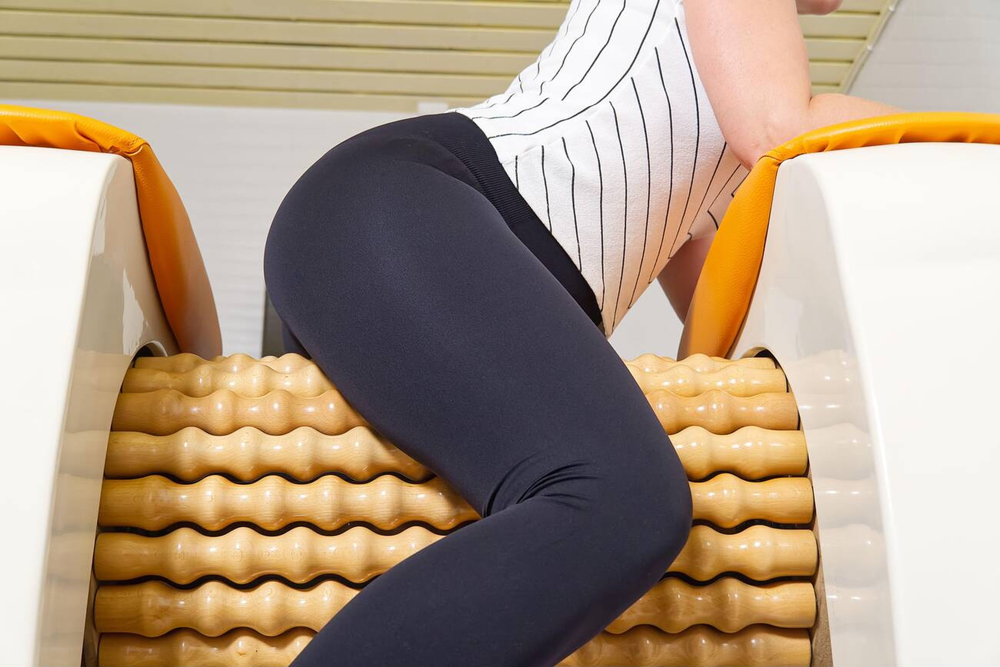
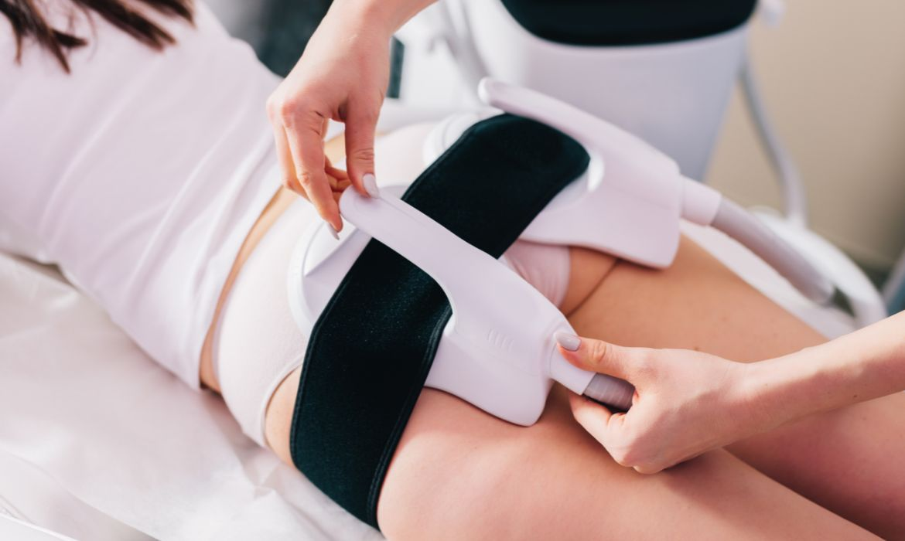

Най-търсените процедури в DARA Body Line
Открий топ 3 терапии, които нашите клиентки обожават

ROLL SHAPER – Лимфен дренаж и антицелулит в едно
Иновативен уред, който стимулира лимфната система, разбива целулит и оформя бедра и седалище. Само 30 минути → видима промяна в обиколките.
Научи повече
Антицелулитен масаж – За оформяне и изглаждане на тялото
Ръчни техники, които подобряват кръвообращението и разбиват мастните натрупвания. Подходящ за бедра, паласки и седалище. Мощен ефект след 5–6 процедури.
Научи повече

EMS Sculpt – мускулен тонус и горене на мазнини
Създава до 20 000 контракции за 30 минути. Мускулът се изгражда, а мазнината изгаря – без болка, без усилие. Топ резултати в комбинация с правилно хранене.
Научи повече